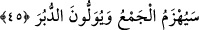

44. Yoksa «Biz, intikam almağa gücü yeten bir topluluğuz» mu diyorlar?
Bu âyet-i kerîme, onları susturmak için getirilen delil ile utançlarından önlerine
baktırmak ve âciz bırakmak içindir. Ayrıca önceki âyet-i kerîme’de muhatap zamiri ile
kendilerine hitap edilirken, bu âyet-i kerîme’de gâib zamîre geçilmiş olması, onlardan
yüz çevirerek, hitap mevkiinden düşürerek muhatab almağa değmez olduklarını
bildirmek içindir. Bu da kendi durumlarının bir gereği olup kötülüklerini başkalarına
anlatmak içindir.
Âyet-i kerîme’nin mânâsı şöyle de anlaşılır; hayır, onlar büyüklük ve güçlerinden
emin olarak, “biz kararlı, sağlam görüşlü, derli topluyuz, bizimle kimse atışamaz, biz
yenilmeyiz mi?” diyorlar. Yahut, “biz düşmanlarımıza karşı yardım olunmuşuz, intikam
alıcıyız, yenilmeyiz mi?” diyorlar.
Ebû Cehil Bedir günü, yelesi ve kuyruğu siyah ve her gün onaltı rıtıl[154] mısır
vererek beslediği doru bir ata bindiği halde, Muhammed (s.a.)’i öldüreceğine yemin
ederek, “biz bu gün Muhammed’den ve arkadaşlarından intikam alacağız” demişti. Ama
o gün müslümanlar onu öldürdüler de kellesini Abdullah b. Mes’ûd (r.a.) Rasûlullah
(s.a.)’e kadar sürükleyip getirmişti.
Bu âyet-i kerîme ayrıca, nefsin inkârcı sıfatlarına, behîmî, şeytânî, vahşî, hevâî ve
hayvânî olmak gibi değişik nevilerine ve bunların birbirileriyle yardımlaşmalarına
işâret etmektedir.
45. O topluluk yakında bozulacak ve onlar arkalarını dönüp kaçacaklardır.
Bu cümle, inkârcıların, âyet-i kerîme’de geçen sözlerini bozup reddetmektedir. Yâni
“elbette Kureyş topluluğu yakında bozulacak” anlamına gelir.
Âyet-i kerîme’nin mânâsı şöyle olur: “Yenilgiye uğramış olarak savaştan dönüp
kaçacaklardır. Allah peygamberine ve müminlere yardım edecektir.” Gerçekten Bedir
günü tam böyle oldu.
Saîd b. Müseyyeb şöyle demiştir; Hz. Ömer (r.a.)’ın şöyle dediğini işittim: “O
topluluk yakında bozulacak ve onlar arkalarını dönüp kaçacaklardır” âyet-i
kerîmesi inince, sözü edilen topluluğun hangisi olduğunu bilmiyordum. Bedir günü
Rasûlullah (s.a.)’ın zırhını giyerken, bu âyet-i kerîmeyi okumakta olduğunu duydum. O
zaman âyetin mânâsını anladım. Bu Rasûlullah (s.a.)’ın mûcizelerindendi. Gaybtan
haber vermişti ve aynen haber verdiği gibi oldu.[155]
İbn Abbâs (r.a.) dedi ki: Bu âyet-i kerîme’nin inmesiyle Bedir arasında yedi yıl
geçmiştir. Buna göre bu âyet-i kerîme Mekke’de inmiştir.